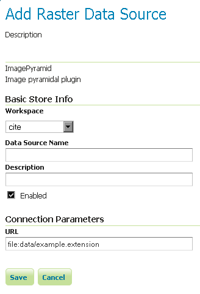

ImagePyramid¶
주석
GeoServer는 초기 상태에서 ImagePyramid를 지원하지 못 하기 때문에 확장 모듈(extension)을 설치해야 합니다. 설치 방법은 Installing the ImagePyramid extension을 참조하십시오.
ImagePyramid는 각각 다른 줌 레벨에서 보여주기 위해 여러 크기로 렌더링된 이미지의 중첩 레이어입니다.
Installing the ImagePyramid extension¶
GeoServer download page에서 ImagePyramid 확장 모듈을 다운로드하십시오.
경고
GeoServer 인스턴스 버전과 확장 모듈 버전이 일치해야 합니다!
압축 파일의 내용물을 GeoServer 설치 디렉터리의 WEB-INF/lib 디렉터리 안에 풉니다.
Adding an ImagePyramid data store¶
확장 모듈을 제대로 설치했다면 새 데이터 저장소를 생성할 때 Raster Data Sources 목록에서 ImagePyramid 옵션을 볼 수 있을 것입니다.

래스터 데이터 저장소 목록의 ImagePyramid 옵션
Configuring an ImagePyramid data store¶

ImagePyramid 데이터 저장소 설정하기
| 옵션 | 설명 |
| Workspace | |
| Data Source Name | |
| Description | |
| Enabled | |
| URL |
이전: Postgis Raster